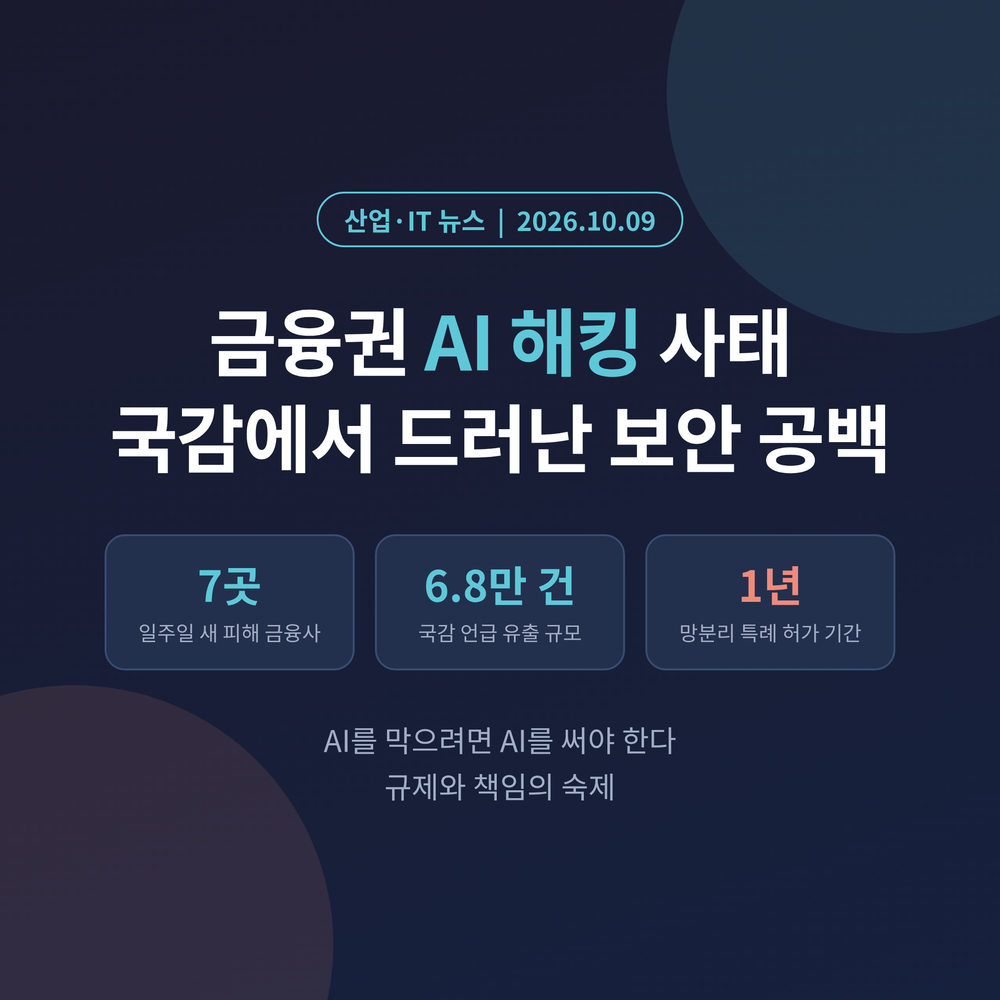
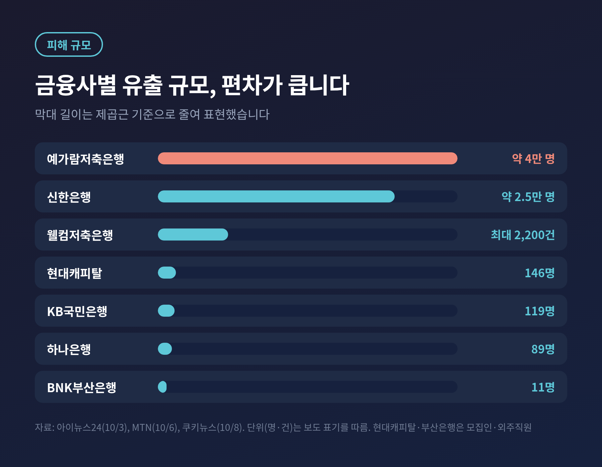
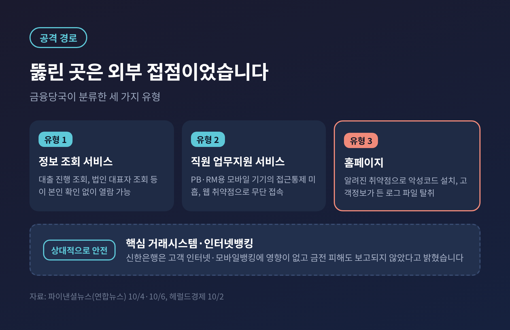
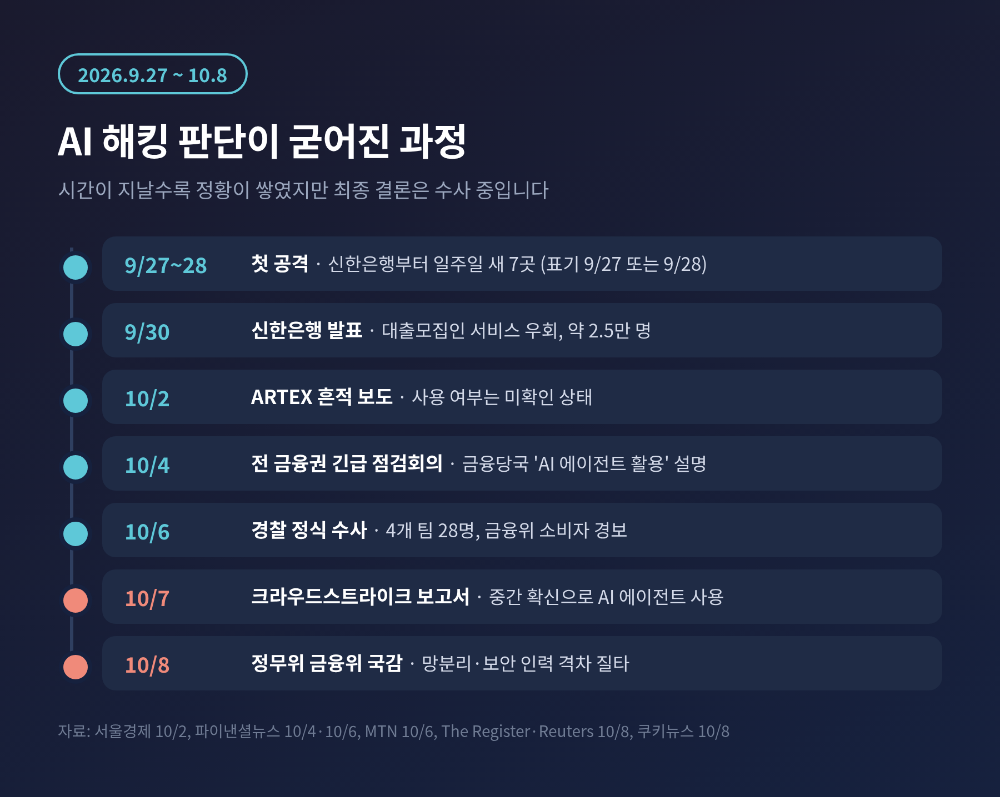
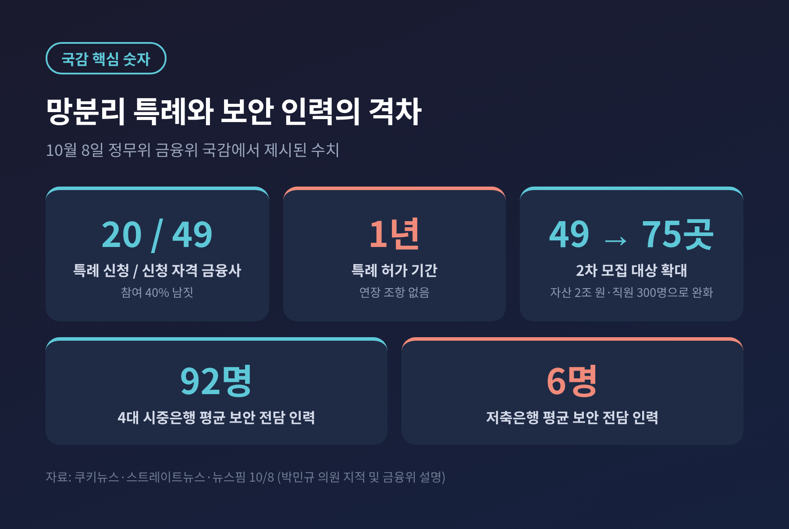
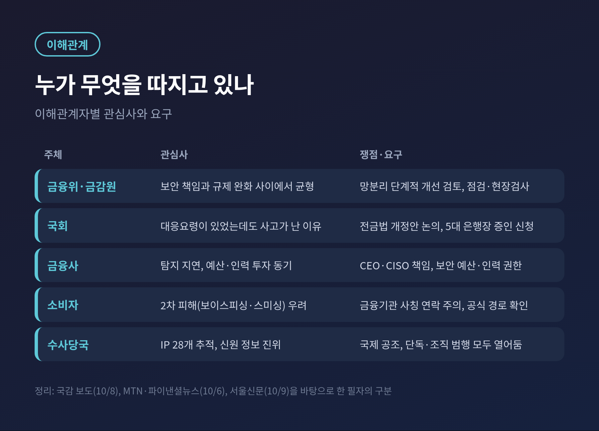

금융권 AI 해킹 사태, 국감서 드러난 망분리 규제와 보안 공백

오늘은 9월 말부터 이어진 금융권 연쇄 해킹과, 10월 8일 국정감사에서 불거진 망분리 규제 논쟁을 정리해 보려 합니다.
공격자가 AI 에이전트 도구를 썼다는 정황이 나오면서 이번 사건은 단순한 개인정보 유출을 넘어 규제의 문제가 되었습니다.
확인된 사실과 아직 확인되지 않은 부분을 나누어 살펴보겠습니다.
3줄 요약
- 일주일 사이 금융사 7곳에서 약 6만8000건(국감 언급 기준)의 개인정보가 유출됐고, 경찰이 정식 수사에 들어갔습니다.
- 민간 보안업체는 AI 에이전트형 침투 도구가 쓰였을 가능성을 제기했지만, 수사당국이 최종 확정한 것은 아닙니다.
- 국감에서는 방어용 AI를 막는 망분리 규제와 중소 금융사의 인력 격차가 핵심 쟁점이 되었습니다.
■ 무슨 일이 있었나: 일주일 새 금융사 7곳
박민규 의원(더불어민주당)은 10월 8일 정무위원회 국감에서 "지난 9월 27일 신한은행을 시작으로 일주일 사이 금융사 7곳이 해킹당했다"고 밝혔습니다. 다만 헤럴드경제는 금융당국 설명을 근거로 기간을 9월 28일부터 10월 3일로 적어, 시작일 표기는 매체마다 조금 다릅니다.
피해가 확인된 곳은 신한은행, KB국민은행, 하나은행, BNK부산은행, 예가람저축은행, 웰컴저축은행, 현대캐피탈입니다. 온라인투자금융업 2개사도 침해 사고를 신고했습니다. 우리은행과 NH농협은행은 공격 시도는 있었으나 고객정보 유출은 확인되지 않았습니다.
규모는 회사마다 큰 차이가 납니다.
- 예가람저축은행 약 4만 명 (가장 큰 규모)
- 신한은행 약 2만5000명
- 웰컴저축은행 법인 고객정보 최대 2,200건
- 현대캐피탈 주택대출 모집인 146명
- KB국민은행 119명, 하나은행 89명, 부산은행 외주 개발직원 11명
국감에서 언급된 총 유출 규모는 6만8000건입니다. 신한은행은 9월 30일 대출모집인 서비스의 본인확인 절차가 우회되어 약 2만5000명의 정보가 나갔다고 밝혔습니다. 이름과 전화번호뿐 아니라 연소득, 대출한도, 일부 고객의 주민등록번호까지 포함됐습니다. 고객의 인터넷·모바일뱅킹은 영향이 없었고 금전 피해는 보고되지 않았습니다.

■ 뚫린 곳은 핵심 시스템이 아니었습니다
금융당국이 분류한 공격 경로는 세 갈래입니다. 대출 진행 조회처럼 본인 확인 없이 열람되는 정보 조회 서비스, 모바일 접근통제가 느슨했던 직원 업무지원 서비스, 그리고 알려진 취약점을 통해 악성코드가 설치된 홈페이지입니다.
공통점은 하나입니다. 핵심 거래시스템이 아니라 외부에 노출된 부가 시스템이었다는 점입니다. 연합뉴스 분석은 "AI 자체의 고도화보다 허술한 보안 관리가 피해를 키웠다"고 평가했습니다.
김형연 의원은 국감에서 두 가지를 짚었습니다. 현대캐피탈은 사고를 알아차리는 데 5일이 걸렸고, 신한은행의 이상 징후는 보안 담당이 아닌 개발팀이 발견했다는 것입니다. 방어의 첫 단계인 탐지부터 구멍이 있었다는 이야기입니다.
공격 IP는 금융감독원이 중복을 제거해 28개를 확인했습니다. 미국 5개, 일본·스웨덴·독일 각 2개 등 여러 나라에 흩어져 있었습니다. 금융당국은 IP가 달라도 동일 공격자가 바꿔가며 유사한 수법을 쓴 것으로 봅니다.

■ 'AI 해킹'이라는 판단은 어디까지 확인됐나
이 대목은 시간순으로 보시는 편이 정확합니다.
10월 2일, 서울경제는 보안업계 분석을 인용해 신한은행 사고와 관련 있는 것으로 추정되는 웹서버에서 중국어로 '자율 침투테스트 콘솔'이라는 뜻의 문자열(ARTEX)이 발견됐다고 보도했습니다. ARTEX는 깃허브에 공개된 오픈소스 침투테스트 도구로, 정보 수집부터 취약점 탐색, 공격 경로 계획까지 LLM 기반 멀티에이전트가 자동으로 수행하도록 설계됐습니다. 당시에는 실제 공격에 쓰였는지 확인되지 않은 상태였습니다.
10월 4일, 금융당국은 AI 에이전트로 취약점 탐색과 침투를 자동화한 것으로 보인다고 설명했습니다.
10월 7일(현지시간), 미국 보안업체 크라우드스트라이크가 보고서를 냈습니다. 핵심은 다음과 같습니다.
- 한 개의 IP에서 ARTEX 인스턴스와 중국어 침투 지침 파일이 담긴 열린 디렉터리가 발견됐습니다.
- ARTEX의 주 백엔드는 딥시크 v4.1-flash였고, 추가 세션에서는 GLM-5.3과 그록 4.6도 쓰였습니다.
- 공격자는 AI에 한국 유출 정보의 판매처와 한국어 텔레그램 판매방을 물었습니다. 금전 동기로 평가됩니다.
- 보고서는 공격자가 미국 AI 기업의 코딩 도구 세션도 사용했다고 적었으며, 해당 기업은 로이터의 논평 요청에 응답하지 않았습니다.
크라우드스트라이크의 아담 마이어스 수석부사장은 한 명이 AI 에이전트의 자율 기능으로 여러 기관을 동시에 공격한 대표 사례라는 취지로 설명했습니다.
신원 문제는 더 조심스럽습니다. 노출된 이력서 작성 요청 기록에는 중국 광둥성, 26세 같은 정보가 담겼습니다. 그러나 같은 기록의 생년월일은 2007년생으로 나이와 맞지 않고, 텔레그램 계정 사용자는 관련이 없다고 부인했습니다. 크라우드스트라이크도 신원을 단정할 수 없다고 선을 그었습니다. 경찰 역시 단서로 삼되 진위 확인이 필요하다는 입장입니다.
정리하면 이렇습니다. 'AI 에이전트 도구가 쓰였다'는 설명은 민간 보고서와 정황이 뒷받침하지만, 수사당국의 최종 결론은 아닙니다. 피해 은행 수도 금융당국은 7곳, 로이터는 최소 9곳으로 다르게 전합니다.

■ 왜 중요한가: 공격 비용은 낮아지고 방어는 묶여 있습니다
첫째는 공격 쪽의 변화입니다. 크라우드스트라이크는 AI 도구가 금전 목적의 공격자에게 짧은 기간에 여러 침입을 수행할 능력을 준다고 평가했습니다. 이름이 아니라 구조가 문제라는 뜻입니다. 숙련된 팀이 아니어도 에이전트와 결합하면 공격 속도와 범위가 커집니다.
둘째는 개인정보의 질입니다. 이름과 전화번호에 연소득, 대출한도, 직장 정보가 더해지면 금융기관을 사칭한 보이스피싱과 스미싱이 훨씬 정교해질 수 있습니다. 금융위원회는 10월 6일 피해 회사 고객에게 피싱과 대출사기를 주의하라는 소비자 경보를 냈습니다.
셋째는 방어 쪽의 구조적 제약입니다. 이 부분은 국감에서 가장 많이 거론됐습니다.
■ 국감 쟁점: 망분리, 1년짜리 특례, 92명과 6명
이억원 금융위원장은 대응이 "기본적인 부분도 굉장히 미흡했다"고 인정했습니다. 그리고 "AI를 막으려면 결국 AI를 쓸 수밖에 없다"며 망분리 규제를 단계적으로 개선하는 방안을 검토 중이라고 답했습니다.
망분리는 내부망과 외부 인터넷을 분리하는 규제입니다. 문제는 상당수 보안 AI 서비스가 클라우드 기반이라 금융사 내부망에서 쓰기 어렵다는 점입니다. 금융위는 지난 5월 이를 보완하는 한시 특례를 시행했습니다. 박민규 의원이 지적한 수치는 이렇습니다.
- 특례 신청 자격을 갖춘 금융사 49곳 중 실제 신청은 20곳에 그쳤습니다.
- 허가 기간은 1년이고 연장 조항이 없어, 비용이 큰 AI 보안 투자를 망설이게 한다는 지적입니다.
- 보안 전담 인력은 4대 시중은행 평균 92명, 저축은행 평균 6명입니다.
금융위는 2차 모집에서 요건을 자산 2조 원, 직원 300명으로 낮춰 대상을 49곳에서 75곳으로 넓혔습니다. 다만 1년이라는 기간은 그대로입니다. 박 의원은 금융위가 주도하는 중소형사 공동 AI 보안체계도 제안했고, 위원장은 "한번 살펴보겠다"고 답했습니다.
한창민 의원은 금융보안원이 7월에 AI 보안위협 대응요령을 내고 9월 17일에는 보안 담당자 160명 대상 세미나까지 열었지만, 현장의 사후 관리와 감독은 이뤄지지 않았다고 비판했습니다. 대응요령이 있었는데도 사고가 났다는 지적입니다.

■ 배경: 법은 10개월째 멈춰 있습니다
2025년 롯데카드 해킹으로 고객 297만 명의 정보가 유출됐을 때도 비슷한 논의가 있었습니다. 이후 유동수 의원이 2025년 11월 말 전자금융거래법 개정안을 발의했습니다. 2026년 3월 정무위에 상정되어 소위원회에 회부됐지만, 이후 논의는 한 번도 이뤄지지 않았습니다.
개정안의 주요 내용은 다음과 같습니다.
- CEO 책임 명확화와 CISO 권한 강화
- 개인신용정보 유출 시 총매출액의 3% 이하 과징금
- 정보보호 공시 도입
- 취약점 보완 계획 미이행 시 5천만 원 이하 이행강제금
한 금융권 관계자는 경영진이 보안 예산과 인력에 투자할 동기가 부족하다고 지적했습니다. 사후 제재만이 아니라 사고에 책임을 지는 구조가 있어야 한다는 취지입니다.
한편 반대편의 시각도 있습니다. 법조계 일각에서는 안전조치 의무 위반과 해킹의 인과관계가 입증되면 은행이 손해배상 책임을 질 수 있다고 봅니다. 그러나 AI를 활용한 전방위 공격은 기존 보안 조치로 막기 어렵다는 반론도 있어, 실제 책임이 인정되기까지는 넘어야 할 문턱이 남아 있습니다.

■ 전망: 앞으로 확인할 다섯 가지
정리하면 이렇습니다. 앞으로 일정과 지표를 기준으로 볼 대목은 다섯 가지입니다.
- 10월 19일 금감원 국감: 국민의힘이 5대 은행장(이환주, 정상혁, 이호성, 정진완, 강태영)을 증인으로 신청했습니다. 최종 채택은 여야 협의 사항입니다.
- 망분리 특례의 변화: 허가 기간 연장이나 상시화로 이어질지가 핵심입니다. 금융위는 추가 시범과 상시화를 검토하겠다는 입장입니다.
- 전자금융거래법 개정안 논의 재개 여부: 10개월 멈춘 법안이 이번 사태로 속도를 낼지 주목됩니다.
- 경찰 수사: IP 28개 분석과 국제 공조 결과, 신원 정보의 진위가 관건입니다. 전자금융기반시설 해당 여부에 따라 수사 체계가 달라질 가능성도 있습니다.
- 2차 피해: 금융기관 사칭 피싱이 늘어나는지 모니터링이 필요합니다.
개인이 할 수 있는 일은 단순합니다. 금융회사를 사칭한 연락이 오면 전화를 끊고 공식 앱이나 대표번호로 직접 확인하시길 권합니다. 대출 상담 중 연소득이나 한도를 정확히 아는 전화라고 해서 믿을 수는 없다는 점을 기억하셨으면 합니다.
끝으로 한마디만 덧붙이겠습니다. 이번 사건에서 AI는 새로운 무기이기도 했지만, 더 크게 드러난 것은 오래된 숙제였습니다. 외부에 열려 있던 조회 서비스, 늦은 탐지, 부족한 인력, 멈춰 있던 법안입니다.
"AI를 막으려면 AI를 써야 한다"는 말이 현실이 되려면, 쓸 수 있는 환경과 쓸 사람이 먼저 갖춰져야 합니다. 규제를 풀지 책임을 묻는 구조를 먼저 세울지, 아니면 두 가지를 함께 할 수 있을지 묻는 질문 앞에 금융권이 서 있습니다.
※ 이 글은 2026년 10월 9일까지 공개된 보도를 정리한 것으로, 수사 결과에 따라 내용이 달라질 수 있습니다. 특정 기업에 대한 투자 권유가 아닙니다.
참고한 보도: 헤럴드경제, 서울경제, 파이낸셜뉴스(뉴시스·연합뉴스), MTN, 아이뉴스24, 뉴스핌, 쿠키뉴스, 뉴스웨이, 스트레이트뉴스, 서울신문, AI타임스, 로이터(Insurance Journal), The Register, Infosecurity Magazine (2026.10.2~10.9)